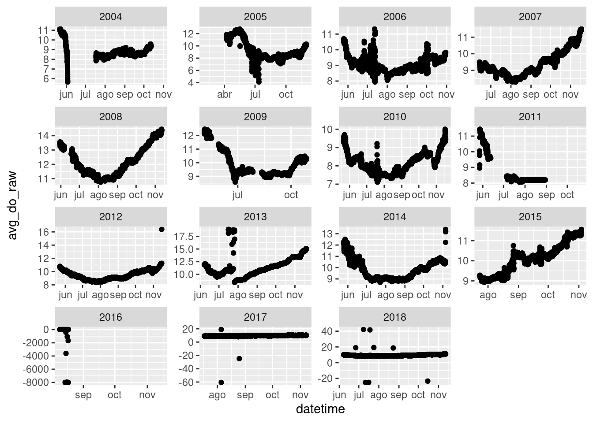

3 Previsualización de los datos
El primer paquete que vamos a usar es “ggplot2”. Si no lo tenéis instalado solo hay que ejecutar este comando en la consola: install.packages("ggplot2"). Es un paquete muy útil y versátil para hacer gráficas. Aquí os dejo una “chuleta” donde se muestran las opciones de las que dispone el paquete: ggplot2 info.
Si cerramos la sesión anterior y no tenemos el objeto en nuestro entorno debemos importar los datos que habíamos descargado.
#Library
library(ggplot2) #Cargamos el paquete
#Cargo los datos que habíamos descargado de GLEON
datos <- read.csv("./Datos_descargados/Datos_Trout.csv")
datos$sampledate <- as.Date(datos$sampledate)
#Creamos una variable que integra la fecha y la hora
datetime <- paste(datos$sampledate, datos$hour)
datos$datetime <- as.POSIXct(datetime, format = "%Y-%m-%d %H")Vamos a echar una visual a los datos de OD, irradiancia, viento y temperatura del agua. Primero recordamos los nombres de las variables de nuestro data.frame:
colnames(datos)## [1] "sampledate" "year4"
## [3] "month" "daynum"
## [5] "hour" "avg_air_temp"
## [7] "flag_avg_air_temp" "avg_rel_hum"
## [9] "flag_avg_rel_hum" "avg_wind_speed"
## [11] "flag_avg_wind_speed" "avg_wind_dir"
## [13] "flag_avg_wind_dir" "avg_do_raw"
## [15] "flag_avg_do_raw" "avg_do_sat"
## [17] "flag_avg_do_sat" "avg_do_wtemp"
## [19] "flag_avg_do_wtemp" "avg_barom_pres_mbar"
## [21] "flag_avg_barom_pres_mbar" "avg_par"
## [23] "flag_avg_par" "datetime"Si tenéis alguna duda sobre cual es cada variable o sus unidades recordad que esa información la tenéis en los metadatos (View Full Metadata).
#Previsualizamos valores de Oxigeno disuelto
ggplot(datos, aes(x = datetime, y = avg_do_raw))+ #Aquí le indicamos que datos queremos representar y cuales son las variables x e y
geom_point()+ #El tipo de gráfico que queremos, yo he elegido puntos
facet_wrap(~year4, scales = "free") #Le indicamos que haga una gráfica por año## Warning: Removed 7550 rows containing missing values (geom_point).
Lo primero que nos dice ggplot es: ## Warning: Removed 7550 rows containing missing values (geom_point), empezamos bien… Bueno no os preocupéis en realidad ggplot solo nos está avisando de que tenemos 7550 filas en las que no hay ningún valor para la variable que hemos representado (OD). Esto es normal, en una base de datos tan grande es habitual que no todas las variables estén disponibles para todo el periodo (el sensor de oxígeno se estropea, tienen que quitar la boya por cuestiones técnicas, etc). Si echamos un vistazo a las gráficas podemos notar varias cosas. Por un lado, parece que no tenemos datos para el invierno, los datos van, generalmente, desde principios de junio hasta finales de noviembre. Por otro lado, cabe resaltar que los valores de OD oscilan entre 8-14 mg/L excepto en los años 2017 que tenemos valores negativos y algunos muy altos de 40 mg/L.
Si quisieramos indagar un poco más:
length(which(datos$avg_do_raw < 0 | datos$avg_do_raw > 20)) #Vemos cuantos datos se salen del rango de concentración esperado.## [1] 43#También podemos seleccionar los datos extraños y ver si alguna variable más muestra valores incoherentes
datos_OD_out <- subset(datos, avg_do_raw < 0 | avg_do_raw > 20)
summary(datos_OD_out)## sampledate year4 month daynum
## Min. :2016-08-14 Min. :2016 Min. : 7.000 Min. :189.0
## 1st Qu.:2016-08-15 1st Qu.:2016 1st Qu.: 8.000 1st Qu.:228.0
## Median :2016-08-16 Median :2016 Median : 8.000 Median :228.0
## Mean :2016-11-23 Mean :2016 Mean : 7.953 Mean :226.7
## 3rd Qu.:2016-08-16 3rd Qu.:2016 3rd Qu.: 8.000 3rd Qu.:229.0
## Max. :2018-10-15 Max. :2018 Max. :10.000 Max. :288.0
## hour avg_air_temp flag_avg_air_temp avg_rel_hum
## Min. : 0.00 Min. : 1.31 Length:43 Min. :45.27
## 1st Qu.: 7.50 1st Qu.:19.30 Class :character 1st Qu.:55.00
## Median :12.00 Median :21.63 Mode :character Median :67.43
## Mean :11.28 Mean :21.05 Mean :68.07
## 3rd Qu.:14.50 3rd Qu.:23.89 3rd Qu.:81.36
## Max. :23.00 Max. :25.89 Max. :88.41
## flag_avg_rel_hum avg_wind_speed flag_avg_wind_speed avg_wind_dir
## Length:43 Min. :0.760 Length:43 Min. : 81.43
## Class :character 1st Qu.:1.375 Class :character 1st Qu.:153.74
## Mode :character Median :1.840 Mode :character Median :200.07
## Mean :2.406 Mean :198.45
## 3rd Qu.:2.855 3rd Qu.:233.00
## Max. :8.460 Max. :305.03
## flag_avg_wind_dir avg_do_raw flag_avg_do_raw avg_do_sat
## Length:43 Min. :-7999.00 Length:43 Min. :-7999.00
## Class :character 1st Qu.:-7999.00 Class :character 1st Qu.:-7999.00
## Mode :character Median :-7999.00 Mode :character Median :-7999.00
## Mean :-5928.70 Mean :-5930.95
## 3rd Qu.:-2642.49 3rd Qu.:-2583.11
## Max. : 42.12 Max. : 98.83
## flag_avg_do_sat avg_do_wtemp flag_avg_do_wtemp avg_barom_pres_mbar
## Length:43 Min. :-7999.00 Length:43 Min. :958.0
## Class :character 1st Qu.:-7999.00 Class :character 1st Qu.:960.0
## Mode :character Median :-7999.00 Mode :character Median :960.0
## Mean :-5917.54 Mean :960.9
## 3rd Qu.:-2633.04 3rd Qu.:961.0
## Max. : 59.23 Max. :969.0
## flag_avg_barom_pres_mbar avg_par flag_avg_par
## Mode:logical Min. : 0.00 Length:43
## NA's:43 1st Qu.: 35.87 Class :character
## Median :347.87 Mode :character
## Mean :341.32
## 3rd Qu.:603.67
## Max. :842.21
## datetime
## Min. :2016-08-14 14:00:00.00
## 1st Qu.:2016-08-15 17:30:00.00
## Median :2016-08-16 04:00:00.00
## Mean :2016-11-24 03:01:23.72
## 3rd Qu.:2016-08-16 14:30:00.00
## Max. :2018-10-15 12:00:00.00#¿A que días afecta?
unique(datos_OD_out$sampledate)## [1] "2016-08-14" "2016-08-15" "2016-08-16" "2016-08-17" "2017-08-05"
## [6] "2017-08-25" "2018-07-08" "2018-07-11" "2018-07-16" "2018-07-18"
## [11] "2018-10-15"Parece que las únicas variables que también se ven afectadas son oxígeno en saturación y temperatura del agua. Posiblemente esas variables se registran con el mismo sensor y hubo algún fallo en él.